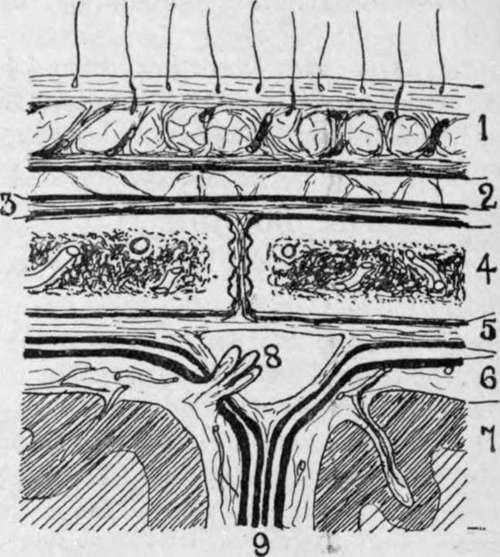

The Cranium
Description
This section is from the book "Surgical Anatomy", by John A. C. MacEwen. Also available from Amazon: Surgical Anatomy.
The Cranium
The scalp consists of the skin of the head, subcutaneous tissues, and occipito-frontalis muscle, these structures being intimately attached to one another by large numbers of small fibrous bands. The boundaries of the true scalp are, therefore, those of the occipito-frontalis muscle, which may be indicated on the surface by a line running from the middle point in front along the supra-orbital margin to the angular process of the frontal, thence slightly above the zygoma to the external auditory meatus, and so to the superior curved line of the occipital bone.
The succeeding layers consist of-(a) the so-called ' dangerous area,' consisting of a layer of loose areolar tissue ; (b) the pericranium, or external periosteum of the skull ; (c) the skull itself. The skin of the scalp is very thick, particularly over the occipital region, and is well supplied with sudoriparous and sebaceous glands, the latter giving rise to sebaceous or atheromatous cysts or wens through blockage of their ducts. These cysts are generally confined to the skin, not involving the subcutaneous structures, and in removing them it is important not to open the sac, nor to open into the dangerous area, as the contents are generally septic.
Owing to the very lax attachment of the occipito-frontalis to the underlying pericranium, or periosteum of the skull, by loose areolar tissue, it possesses a great degree of mobility, as is evidenced by the movement of the scalp as a whole when the brow is wrinkled. This freedom of movement has an effect in protecting the scalp from injury, and the looseness of the attachment is also illustrated in avulsion of the scalp from the hair becoming caught in revolving machinery, and in scalping.
The scalp has a rich vascular and lymphatic supply. The arteries run in an upward direction in the subcutaneous tissues, are tortuous, and anastomose freely. They arise from frontal and supra-orbital branches of the ophthalmic of the internal carotid, and the superficial temporal, posterior auricular and occipital branches of the external carotid.
The superficial temporal artery may be reached through a vertical incision 1 inch in front of the ear, and the occipital, which is generally the largest vessel of the scalp, through an incision passing obliquely backwards and upwards from behind the tip of the mastoid process.
Fig. 2.-Scalp Section.
1. Scalp, composed of skin, dense cellular tissue, and occipito-frontalis aponeurosis.
Fluid accumulations small and circumscribed.
2. Loose areolar layer. Fluid accumulations widely spread.
3. Pericranium, loosely attached to bone save at sutures. Fluid accumulations limited to one bone.
4. Bone of skull with vascular diploic tissue.
5. Dura mater, comparatively loosely attached save at sutures. Fluid accumulations may be considerable.
6. Pia-arachnoid, loose but very vascular. Fluid accumulations widely spread.
7. Brain matter with small end arteries Fluid accumulations generally circumscribed.
8. Superior longitudinal sinus, formed by splitting of dura, and presenting a projecting Pacchionian body which communicates between the sinus and the subarachnoid space, and probably assists in regulating the amount of cerebro-spinal fluid.
9. Falx cerebri formed by a process of dura.
Ligature of these vessels, and particularly of the temporal, may be required (apart from injuries) in the treatment of cirsoid aneurysm, which sometimes affects them. Owing, however, to the free anastomosis, this treatment is seldom successful. Where, from any reason, it is desirable to check the whole blood-supply of the scalp (as in operation on large naevi), a piece of rubber tubing maybe tied tightly round the head at the level of the eyebrows in front and under the external occipital protuberance behind. Owing to the upward direction of the cranial vessels, one should, in cutting scalp flaps, make them with the convexity toward the vertex. While the arteries are comparatively free in the subcutaneous tissues, running in tunnelled spaces, the veins are rather adherent, and hence, when divided, tend to gape and give rise to free haemorrhage. In operations on the scalp haemorrhage, as just explained, is generally troublesome, and, owing to the very dense nature of the scalp itself, the vessels are frequently difficult to pick up with pressure forceps. Artery forceps may be employed for the more troublesome ones, and the others arrested by firm pressure applied for a few minutes.
The extreme vascularity of the scalp explains why wounds heal so rapidly, and why sloughing rarely occurs, even when portions are almost detached. In one rhinoplastic operation for the formation of a new nose a flap is taken down from the brow, the portion so detached being fed through its narrow pedicle by the small frontal artery.
The lymphatics of a small central anterior portion of the brow and upper part of the nose drain to the submaxillary glands ; the frontal and parietal regions in front of the ear drain to the preauricular ; the parietal region over and for a short distance behind the ear drains to the postauricular ; and the remainder to the occipital glands.
The nerves supplying the scalp are the supratrochlear, supra-orbital (which may be cut for relief of neuralgia of scalp), auriculo-temporal, posterior auricular, and great occipital.
Wounds of the scalp do not gape, as a rule, unless the occipito-frontalis be divided in a transverse direction. They frequently present a sharply-cut appearance, even when produced by blows from blunt instruments, the scalp splitting over the cranium as the outer coating of a cricket-ball sometimes does when struck by a flat bat. A close inspection of such wounds produced by blunt instruments shows that the hair bulbs are not cut, but project from one edge of the wound ; and, further, nerve fibrils, and even vessels, may be seen stretching uncut across the deeper parts.
Owing to the dense structure of the scalp, large effusions of fluid, such as pus or blood, cannot occur in it. In many severe contusions, however, the scalp tissues are actually displaced and heaped up peripherally, while a considerable amount of blood is also effused. This effused blood clots more rapidly at the periphery than in the centre, and the peripheral portion is frequently so firm and sharply defined that, on running the fingers over it, and then dipping into the central soft portion, one is apt to think that a depressed fracture of the skull has occurred. When in doubt, firm pressure should be applied by the finger for a short time over the raised area. If due to blood-clot, it will be dispersed by the pressure, whereas fracture is rendered more prominent.
Effusions of fluid in the loose areolar tissue lying under the occipito-frontalis, on the other hand, are only limited by the insertions of the occipito-frontalis muscle anteriorly and posteriorly, while laterally they may extend downwards over the temporal fascia to near the zygoma. This region, then, is known as the dangerous area of the scalp, and particularly where there is reason to fear that it has been opened into by a septic scalp wound should the wound be treated by packing, allowing it to granulate from the bottom. It should be noted that the occipito-frontalis is practically continuous in front with the pyramidalis nasi, corrugator supercilii, and orbicularis palpebrarum, and hence effusions readily extend into the tissues of the eyelid and nose from under the occipito-frontalis.
The pericranium forms a rather loose covering for the bones of the skull, save at the sutures, where it dips in between them and is firmly adherent. Effusions of fluid under the pericranium are therefore generally confined to a single bone.
Cephalhematoma, an effusion of blood under the pericranium of the parietals, is generally due to pressure or injury during labour (see also Extra- and Subdural Haemorrhage).
Stripping of the pericranium is not generally a matter of much moment, as the bones of the skull derive their chief blood-supply from the diploic vessels.
Continue to:
- prev: Section I. Head And Neck, Vertebral Column, Brain And Spinal Cord. The Head. Surface Anatomy
- Table of Contents
- next: Temporal Region